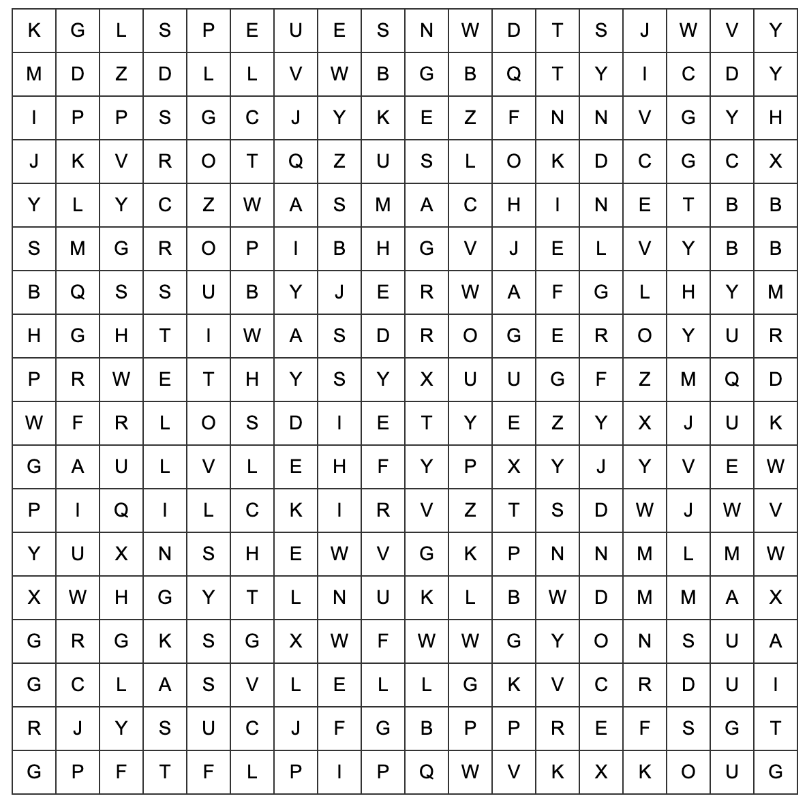

Goed gedaan, speurneus!
De Schaduwpoot is slim, maar jij bent slimmer. Hij heeft zijn volgende aanwijzing verstopt in een reeks woorden die je eerst moet vinden...

Vul de 5 verborgen woorden hieronder in. Ze kunnen in willekeurige
volgorde worden ingevuld.
Als je ze allemaal goed hebt, laat de Schaduwpoot weer iets achter...